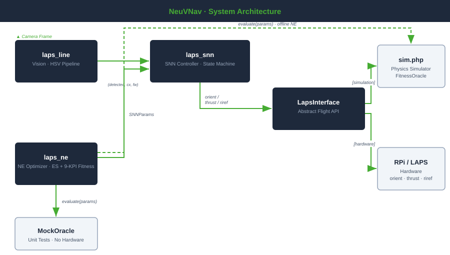

Fig. 2. NeuVNav system architecture.
laps_line provides visual boundary detection via HSV pipeline;
laps_snn implements the reactive SNN controller as a state machine;
laps_ne runs offline neuro-evolution using sim.php as fitness oracle.
LapsInterface decouples AI modules from hardware (RPi/LAPS) and simulation
(sim.php / MockOracle). Dashed arrow indicates offline pre-flight optimisation.